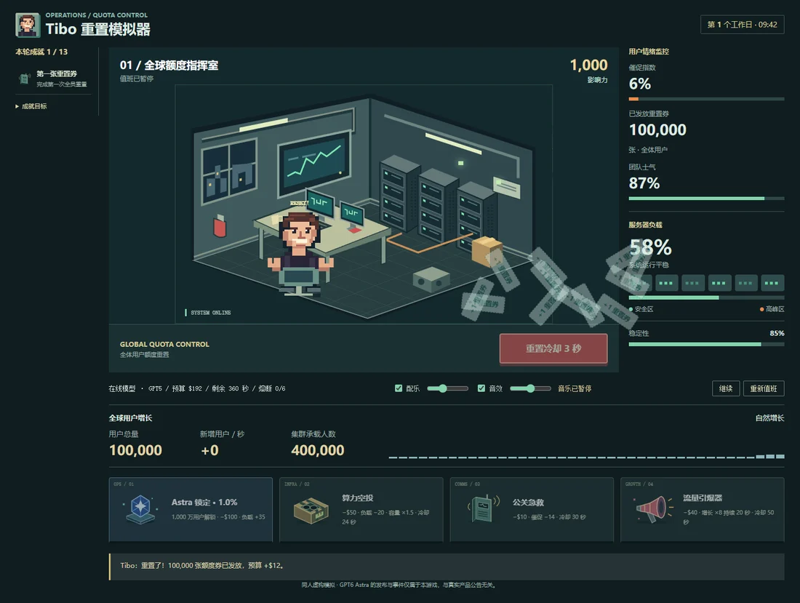

HELLO, WORLD. / 这里是我的一小片互联网
mcyh234.
一边折腾，一边创造。
从日常需求出发，写工具、做应用，偶尔造点好玩的。
把想法变成代码，把代码变成用得上的东西。
Self-hosted
Automation
Just for fun
01 / SELECTED WORK
想法的具体形状.
一些解决问题的工具，
和一些纯粹出于好奇的尝试。
SavedStream
让收藏夹，成为私人媒体库。
把 Telegram Saved Messages 变成可搜索、可播放的多账号媒体库。按需加载，给本地硬盘减减负。
APIMonitorBot
状态有变化，让机器人先知道。
定时检测 API 可用性，将中断与恢复通知送到 QQ。支持多配置、巡检历史和 Web 管理界面。
usb-usb-cpe
让 Android 多一种打开方式。
将 Android 设备用作 USB 5G CPE，支持自动网络共享、Magisk 保活、短信转发及 WebUI 管理。
Alipay2SubCDK
把重复的流程，交给自动化。
连接 Android 支付通知与 OneBot 机器人，为 Sub2API 提供自托管的支付充值流程。
upstream-ops
分散的上游，集中看清楚。
集中管理 NewAPI 与 Sub2API 的上游账户、余额、倍率和告警。此仓库 fork 自 bejix/upstream-ops。
欢迎围观、交流与改进。 逛逛我的 GitHub
还没有找到这个项目
换一个关键词，或者看看全部项目。
6 个公开项目仓库快照 · 2026.09.19
02 / A LITTLE ABOUT ME
curiosity
in progress_
in progress_
你好，我是 mcyh234.
喜欢从「这件事能不能更方便一点」开始，
把日常里的小麻烦，变成一个个小项目。
这个角落收录了我的自托管应用、自动化工具和 Web 实验。代码公开，想法也欢迎碰撞。
在 GitHub 上认识我01
自己的服务，自己掌握
从媒体库到网络设备，用自托管把工具放在自己手里。
02
少一点重复，多一点自动
监控、通知、工作流。让代码接住那些重复的小事。
03
实用之外，也要有趣
留一点空间给像素、游戏，以及突然冒出来的想法。
03 / KEEP IN TOUCH
从一个想法，
开始一段对话.
发现了 bug，有个新点子，或者只是想打个招呼？
我们在 GitHub 上见。